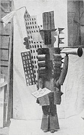
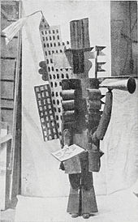

Pablo Ruiz y Picasso, also known as Pablo Picasso (/pɪˈkɑːsoʊ, -ˈkæsoʊ/;[2] Spanish: [ˈpaβlo piˈkaso]; 25 October 1881 – 8 April 1973), was a Spanish painter, sculptor, printmaker, ceramicist, stage designer, poet and playwright who spent most of his adult life in France. Regarded as one of the greatest and most influential artists of the 20th century, he is known for co-founding the Cubist movement, the invention of constructed sculpture,[3][4] the co-invention of collage, and for the wide variety of styles that he helped develop and explore. Among his most famous works are the proto-Cubist Les Demoiselles d'Avignon (1907), and Guernica (1937), a portrayal of the Bombing of Guernica by the German and Italian airforces at the behest of the Spanish nationalist government during the Spanish Civil War.
Picasso, Henri Matisse and Marcel Duchamp are regarded as the three artists who most defined the revolutionary developments in the plastic arts in the opening decades of the 20th century, responsible for significant developments in painting, sculpture, printmaking and ceramics.[5][6][7][8]
Picasso demonstrated extraordinary artistic talent in his early years, painting in a naturalistic manner through his childhood and adolescence. During the first decade of the 20th century, his style changed as he experimented with different theories, techniques, and ideas. His work is often categorized into periods. While the names of many of his later periods are debated, the most commonly accepted periods in his work are the Blue Period (1901–1904), the Rose Period (1904–1906), the African-influenced Period (1907–1909), Analytic Cubism (1909–1912), and Synthetic Cubism (1912–1919), also referred to as the Crystal period.
Exceptionally prolific throughout the course of his long life, Picasso achieved universal renown and immense fortune for his revolutionary artistic accomplishments, and became one of the best-known figures in 20th-century art.
Picasso was baptized Pablo Diego José Francisco de Paula Juan Nepomuceno María de los Remedios Cipriano de la Santísima Trinidad Ruiz y Picasso,[1] a series of names honoring various saints and relatives.[9] Ruiz y Picasso were included for his father and mother, respectively, as per Spanish law. Born in the city of Málaga in the Andalusian region of Spain, he was the first child of Don José Ruiz y Blasco (1838–1913) and María Picasso y López.[10] His mother was of one quarter Italian descent, from the territory of Genoa.[11] Though baptized a Catholic, Picasso would later on become an atheist.[12] Picasso's family was of middle-class background. His father was a painter who specialized in naturalistic depictions of birds and other game. For most of his life Ruiz was a professor of art at the School of Crafts and a curator of a local museum. Ruiz's ancestors were minor aristocrats.
Picasso showed a passion and a skill for drawing from an early age. According to his mother, his first words were "piz, piz", a shortening of lápiz, the Spanish word for "pencil".[13] From the age of seven, Picasso received formal artistic training from his father in figure drawing and oil painting. Ruiz was a traditional academic artist and instructor, who believed that proper training required disciplined copying of the masters, and drawing the human body from plaster casts and live models. His son became preoccupied with art to the detriment of his classwork.
The family moved to A Coruña in 1891, where his father became a professor at the School of Fine Arts. They stayed almost four years. On one occasion, the father found his son painting over his unfinished sketch of a pigeon. Observing the precision of his son's technique, an apocryphal story relates, Ruiz felt that the thirteen-year-old Picasso had surpassed him, and vowed to give up painting,[14] though paintings by him exist from later years.
In 1895, Picasso was traumatized when his seven-year-old sister, Conchita, died of diphtheria.[15] After her death, the family moved to Barcelona, where Ruiz took a position at its School of Fine Arts. Picasso thrived in the city, regarding it in times of sadness or nostalgia as his true home.[16] Ruiz persuaded the officials at the academy to allow his son to take an entrance exam for the advanced class. This process often took students a month, but Picasso completed it in a week, and the jury admitted him, at just 13. The student lacked discipline but made friendships that would affect him in later life. His father rented a small room for him close to home so he could work alone, yet he checked up on him numerous times a day, judging his drawings. The two argued frequently.
Picasso's father and uncle decided to send the young artist to Madrid's Real Academia de Bellas Artes de San Fernando, the country's foremost art school.[16] At age 16, Picasso set off for the first time on his own, but he disliked formal instruction and stopped attending classes soon after enrollment. Madrid held many other attractions. The Prado housed paintings by Diego Velázquez, Francisco Goya, and Francisco Zurbarán. Picasso especially admired the works of El Greco; elements such as his elongated limbs, arresting colors, and mystical visages are echoed in Picasso's later work.
After acquiring some fame and fortune, Picasso left Olivier for Marcelle Humbert, who he called Eva Gouel. Picasso included declarations of his love for Eva in many Cubist works. Picasso was devastated by her premature death from illness at the age of 30 in 1915.[35]
At the outbreak of World War I in August 1914 Picasso was living in Avignon. Braque and Derain were mobilized and Apollinaire joined the French artillery, while the Spaniard Juan Gris remained from the Cubist circle. During the war Picasso was able to continue painting uninterrupted, unlike his French comrades. His paintings became more sombre and his life changed with dramatic consequences. Kahnweiler’s contract had terminated on his exile from France. At this point Picasso’s work would be taken on by the art dealer Léonce Rosenberg. After the loss of Eva Gouel, Picasso had an affair with Gaby Lespinasse. During the spring of 1916 Apollinaire returned from the front wounded. They renewed their friendship, but Picasso began to frequent new social circles.[36]
_at_the_Théâtre_du_Châtelet,_Paris,_1917,_Lachmann_photographer.jpg) 

Towards the end of World War I, Picasso made a number of important relationships with figures associated with Serge Diaghilev's Ballets Russes. Among his friends during this period were Jean Cocteau, Jean Hugo, Juan Gris, and others. In the summer of 1918, Picasso married Olga Khokhlova, a ballerina with Sergei Diaghilev's troupe, for whom Picasso was designing a ballet, Erik Satie's Parade, in Rome; they spent their honeymoon near Biarritz in the villa of glamorous Chilean art patron Eugenia Errázuriz.
After returning from his honeymoon, and in desperate need of money, Picasso started his exclusive relationship with the French-Jewish art dealer Paul Rosenberg. As part of his first duties, Rosenberg agreed to rent the couple an apartment in Paris at his own expense, which was located next to his own house. This was the start of a deep brother-like friendship between two very different men, that would last until the outbreak of World War II.
Khokhlova introduced Picasso to high society, formal dinner parties, and all the social niceties attendant to the life of the rich in 1920s Paris. The two had a son, Paulo Picasso,[37] who would grow up to be a dissolute motorcycle racer and chauffeur to his father. Khokhlova's insistence on social propriety clashed with Picasso's bohemian tendencies and the two lived in a state of constant conflict. During the same period that Picasso collaborated with Diaghilev's troupe, he and Igor Stravinsky collaborated on Pulcinella in 1920. Picasso took the opportunity to make several drawings of the composer.
In 1927 Picasso met 17-year-old Marie-Thérèse Walter and began a secret affair with her. Picasso's marriage to Khokhlova soon ended in separation rather than divorce, as French law required an even division of property in the case of divorce, and Picasso did not want Khokhlova to have half his wealth. The two remained legally married until Khokhlova's death in 1955. Picasso carried on a long-standing affair with Marie-Thérèse Walter and fathered a daughter with her, named Maya. Marie-Thérèse lived in the vain hope that Picasso would one day marry her, and hanged herself four years after Picasso's death. Throughout his life Picasso maintained several mistresses in addition to his wife or primary partner. Picasso was married twice and had four children by three women:
Photographer and painter Dora Maar was also a constant companion and lover of Picasso. The two were closest in the late 1930s and early 1940s, and it was Maar who documented the painting of Guernica.
In February 1917, Picasso made his first trip to Italy.[38] In the period following the upheaval of World War I, Picasso produced work in a neoclassical style. This "return to order" is evident in the work of many European artists in the 1920s, including André Derain, Giorgio de Chirico, Gino Severini, Jean Metzinger, the artists of the New Objectivity movement and of the Novecento Italiano movement. Picasso's paintings and drawings from this period frequently recall the work of Raphael and Ingres.
Pablo Picasso died on 8 April 1973 in Mougins, France, while he and his wife Jacqueline entertained friends for dinner. He was interred at the Chateau of Vauvenargues near Aix-en-Provence, a property he had acquired in 1958 and occupied with Jacqueline between 1959 and 1962. Jacqueline Roque prevented his children Claude and Paloma from attending the funeral.[52] Devastated and lonely after the death of Picasso, Jacqueline Roque killed herself by gunshot in 1986 when she was 59 years old.[53]